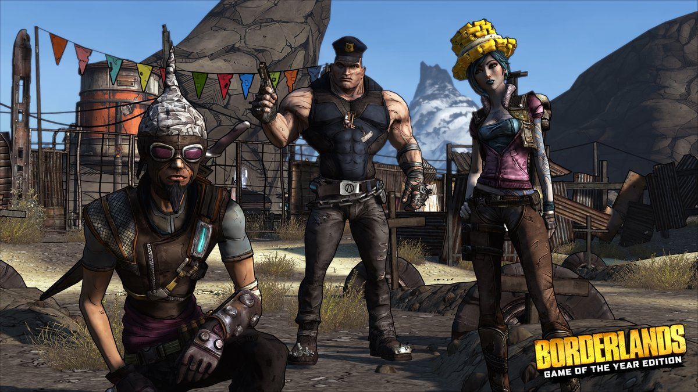
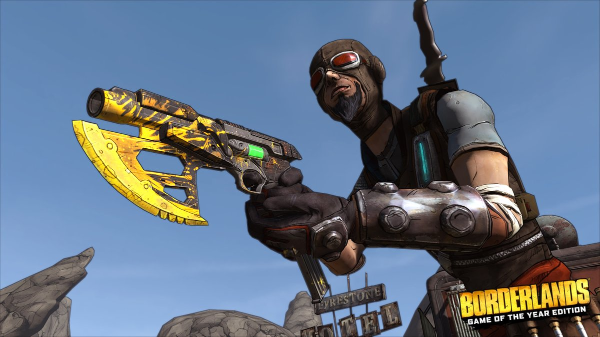
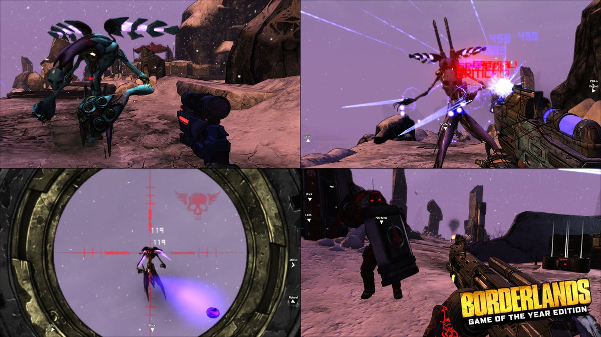
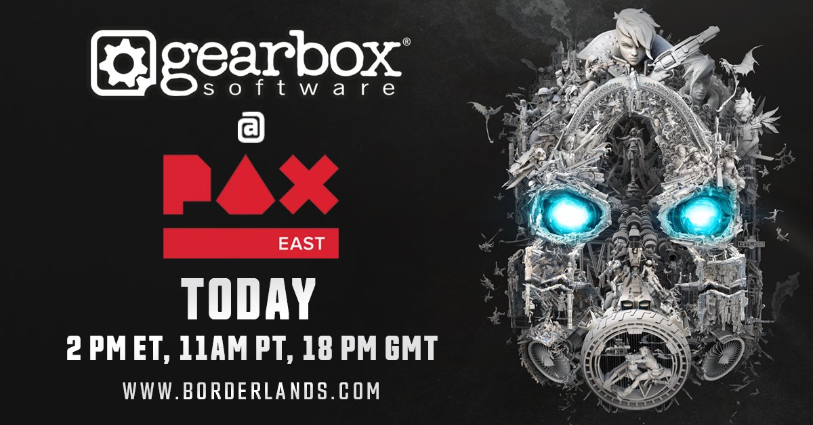

Tweets
- Tweets, current page.
- Tweets & replies
- Media
You blocked @Borderlands
Are you sure you want to view these Tweets? Viewing Tweets won't unblock @Borderlands
-
Pinned Tweet
Prepare for an all-new mayhem-fueled adventure across the worlds of
#Borderlands3! Head to http://Borderlands.com on April 3 for more info! Watch it here! ➜ https://youtu.be/d9Gu1PspA3Y pic.twitter.com/o6W3gmIojnThanks. Twitter will use this to make your timeline better. UndoUndo -
Borderlands: Game of the Year Edition will be available for digital download April 3 on PlayStation and Xbox Stores at 7am PT / 15:00 BST. Steam users can download the update at 10am PT / 18:00 BST tomorrow. Physical copies & physical pre-orders are limited to the US & Canada.
Show this threadThanks. Twitter will use this to make your timeline better. UndoUndo -
Borderlands: Game of the Year Edition drops TOMORROW with new weapons, visual upgrades, character heads, gold chests and keys, all 4 add-on packs, and more! ➜ https://borderlands.com pic.twitter.com/QnuNPlb2Zq
Show this threadThanks. Twitter will use this to make your timeline better. UndoUndo -
Catch some early livestreams of Borderlands: Game of the Year Edition today on Twitch! ➜ https://www.twitch.tv/directory/game/Borderlands …pic.twitter.com/LQZVuE9Gh0
Thanks. Twitter will use this to make your timeline better. UndoUndo -
Virtual Vault Hunters, we’re bringing ALL the DLC for Borderlands 2 VR straight to your eye-holes for FREE this summer! No foolin'!
#BL2VRpic.twitter.com/qnm7MbKeh0Thanks. Twitter will use this to make your timeline better. UndoUndo -
Yesterday, we showed up to
#PAXEast to announce Borderlands 3! Much love to all the#borderfam who showed up with us! pic.twitter.com/iOxfTm617iThanks. Twitter will use this to make your timeline better. UndoUndo
pic.twitter.com/iOxfTm617iThanks. Twitter will use this to make your timeline better. UndoUndo -
Heading into the weekend like…
#FridayFeelingpic.twitter.com/apYwwtBRibThanks. Twitter will use this to make your timeline better. UndoUndo -
To redeem, at the Borderlands 2 Main Menu select Extras then SHiFT Code. For help with Borderlands 2 or SHiFT, visit http://support.gearboxsoftware.com http://bit.ly/2UO7jvZ
Thanks. Twitter will use this to make your timeline better. UndoUndo -
These SHiFT codes for 5 Golden Keys will grant you some new loot in Borderlands 2! [Active through 04/15] BL2 PC/Mac: WT5JB-T9KZB-XFT6W-TTTTB-W5WJB XB360/XBOne: 5T5BT-SXRRC-ZZRRZ-56BBT-9BB3C PS3/PS4/PS Vita/PSVR: CJC33-KHBHZ-HBC9W-H3KTB-F93KHpic.twitter.com/APehXsrVe1
Thanks. Twitter will use this to make your timeline better. UndoUndo -
Sending the hugest of shout-outs and thanks to the devs at
@Blind_Squirrel_ for their work on Borderlands: Game of the Year Edition and to@Hangar13Games for their work on The Handsome Collection Ultra HD Pack! You rock!pic.twitter.com/PkxpI450i3Thanks. Twitter will use this to make your timeline better. UndoUndo -
Borderlands: Game of the Year Edition drops April 3rd with new weapons, visual upgrades, character heads, gold chests and keys, plus all 4 add-on packs, all in one sweet, deliciously modern package! Learn more at http://Borderlands.com pic.twitter.com/XQoMyY8aze
Borderlands: Game of the Year Official TrailerBorderlands: Game of the Year Edition drops April 3rd!Thanks. Twitter will use this to make your timeline better. UndoUndo -
The Handsome Collection Ultra HD Texture Pack drops on April 3! Borderlands has never looked so handsome! Explore Pandora in all of its Ultra HD and HDR glory on PS4 Pro, Xbox One X, and PC. Learn more at http://Borderlands.com pic.twitter.com/zDuYD4cwYj
Borderlands: The Handsome Collection Ultra HD Official TrailerThe Handsome Collection Ultra HD texture pack and enhancements drop April 3!Thanks. Twitter will use this to make your timeline better. UndoUndo -
We're LIVE at
#PAXEast! Are you watching?https://twitter.com/Borderlands/status/1111319564627828741 …Thanks. Twitter will use this to make your timeline better. UndoUndo -
We're streaming live at
#PAXEast in just 30 MINUTES! Watch live at http://Borderlands.com to see what we have planned!pic.twitter.com/v6guSPI1iXThanks. Twitter will use this to make your timeline better. UndoUndo -
Today's the day you've been waiting for! Watch
@GearboxOfficial's#PAXEast Livestream at http://Borderlands.com . Spread the word, minions!pic.twitter.com/yv4msDJdleThanks. Twitter will use this to make your timeline better. UndoUndo -
Borderlands 3 Retweeted
We invite you to co-stream the
@GearboxOfficial Main Theater Show this Thursday at 2PM EST! Make sure to tag your stream with the Borderlands category! First time co-streaming? Here’s an article to help get you started: https://bddy.me/2TwGSta pic.twitter.com/qLiKGGfIwSThanks. Twitter will use this to make your timeline better. UndoUndo -
Borderlands 3 Retweeted
Mayhem is coming! Tune in tomorrow at 2pm EDT / 11am PDT at http://Borderlands.com for
@GearboxOfficial's#PAXEast livestream.pic.twitter.com/K8SOgPXwQQBorderlands Teaser Trailer - Mask of MayhemTune in March 28th 2pm EDT at Borderlands.com for Gearbox's PAX East livestream!Show this threadThanks. Twitter will use this to make your timeline better. UndoUndo -
Watch the livestream tomorrow at http://Borderlands.com ! March 28th - 11:00am PDT / 18:00pm GMT / 19:00pm CET / 20:00pm EET March 29th – 2:00am GMT+8 / 3:00am JST/KST / 5:00am AEDT
Show this threadThanks. Twitter will use this to make your timeline better. UndoUndo -
Want to hear Borderlands news before everyone else? JUST FOLLOW THE SOOTHING SOUND OF MY VOICE!pic.twitter.com/RfDSE0VMjU
Thanks. Twitter will use this to make your timeline better. UndoUndo
Loading seems to be taking a while.
Twitter may be over capacity or experiencing a momentary hiccup. Try again or visit Twitter Status for more information.
Worldwide trends
-
Kevin Pillar
Blue Jays trade Kevin Pillar to the Giants for three players
-
#WorldAutismAwarenessDay
People share stories about their loved ones with autism

-
Superman
19.3K Tweets
-
Giants
56.2K Tweets
-
#MargaretJack
-
#AvengersEndgame
Avengers: Endgame tickets are on sale and fans are losing it
-
Alford
1,948 Tweets
-
#LightItUpBlue
14K Tweets
-
San Fran
1,821 Tweets
-
Bioware
10.6K Tweets